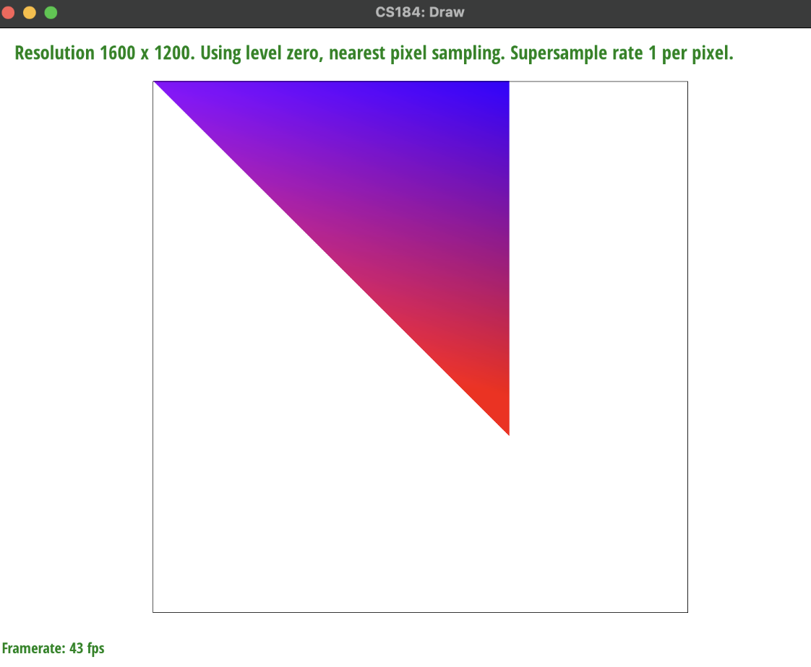
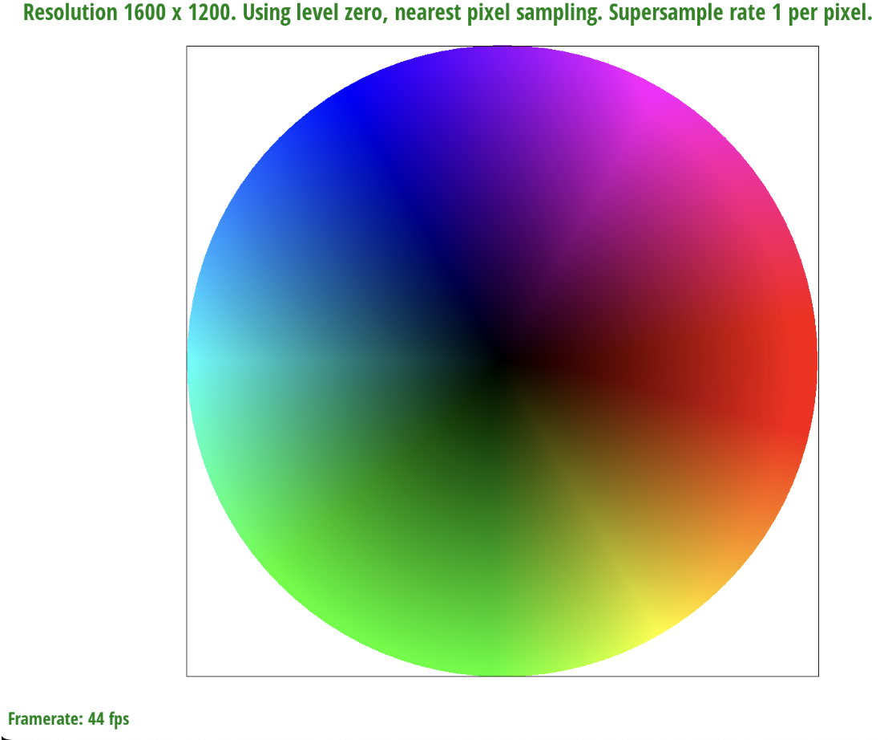

Overview
In this project, I created a program that renders SVG files and applies PNG textures to them. Though this project starts with basic ideas such as drawing, rotating and coloring triangles on the screen, I fine-tuned each idea, which resulted in being able to render more and more complex images. These improvements were evident while comparing one-sample rasterization versus supersampling, and for texture mapping, sampling the nearest texel versus proportionally blending the four nearest texels with bilinear interpolation. It’s amazing how I started with a basic idea, such as taking one sample per pixel for rasterization, and slightly changed it by sampling a couple more times per pixel, and a completely different and more realistic image emerged out of it. This was a theme throughout the project that I enjoyed witnessing: the most complex image renderings are still rooted in simple ideas.
Section I: Rasterization
Part 1: Rasterizing single-color triangles
To rasterize a triangle, we need three vertices of a triangle to approximate the set of pixels that will make up that triangle. To do this, we can sample every pixel in the frame buffer against a function that tells us if the pixel is in the triangle or not. If it is in the triangle, we will fill the pixel in, if it's not, we will not fill the pixel in. More specifically, we can compute if a pixel is in the triangle using the three-line test. For each point, we will compute whether or not the function returned is greater than, equal to, or less than 0 for each line. If for a specific point, the 3 functions returned are all greater than 0, the point must be inside the three lines, and therefore we fill that pixel in. We must also figure out the winding order of the triangle to figure out what order to compute the distances between points. Does the triangle go from P0->P1->P2 or P2->P1->P0. To do this we compute the area of the triangle with one winding order, and if that returns a negative area, that winding order is not correct, and vice-versa. Our algorithm is no worse than checking each sample within the bounding box because I am not checking every sample within the frame. Instead, I have upper bounded our x and y values of the pixels I am checking to the maximum value of x0, x1, x2 and y0, y1, y2 respectively. By the properties of a triangle, there cannot be points higher on the y-axis or further on the x-axis than these points.
Part 2: Antialiasing triangles
I improved the rasterization pipeline by modifying the rasterize_triangle function from above and now sample at sqrt(sample_rate) * sqrt(sample_rate) locations in each pixel, essentially sampling at a higher resolution then averaging all the sampled color values within each pixel for display (also known as downsampling). This supersampling method is useful to smooth out “jaggies” in an image and reduce aliasing components. Within each sample in a pixel, I perform a point-in-triangle test using barycentric coordinates; if the point lies inside the triangle, I assign the triangle’s color to the sample in the sample buffer. The sample_buffer stores color samples for each pixel, with multiple samples per pixel (based on the sample rate), and each sample’s storage index is based on its pixel coordinates and sample index within the pixel. I also resized the sample_buffer to accommodate an increased number of samples per pixel. We average the colors in the samples within each pixel in the resolve_to_framebuffer, and assign the averaged color to the corresponding location in the framebuffer. Therefore supersampling anti aliasing the triangles passed into rasterize_triangles by averaging colors of multiple samples within each pixel, and this averaging smooths the edges of the rendered triangles.
As we increase the sampling rate, we are assigning more accurate averages of the pixel color to each pixel because we are sampling at higher resolutions and downsampling to average their values. We will have a more accurate pixel color, and therefore we capture finer details and reduce the aliasing effects from lower sampling rates like a rate of 1 sample per pixel, where we can see the jaggies very clearly.
Part 3: Transforms
For this part, the red colored robot was the default robot. Using the transforms we defined to translate, scale and rotate different parts of the robot’s body, we transformed the outer part of his right arm (composed of two triangles) by scaling their x components down and their y components up and then translating them so that we get a waving hand. Then we changed his entire body’s hex colors to alternating shades of pink instead of all red.

|
|
Section II: Sampling
Part 4: Barycentric coordinates
Barycentric coordinates can be used to interpolate across a triangle to find texture coordinates, colors, and normal vectors at different vertices. For example, in the image below, each vertex of the triangle is purple, blue, and red respectively. For each pixel within the triangle, we use the barycentric coordinates to compute the color of the triangle, using the equation (x, y) = alpha * A + beta * B + gamma * C where A, B, C are the triangles vertices and alpha, beta, gamma tells us where the pixels are located in relation to A, B, and C.
|

|

|
Part 5: "Pixel sampling" for texture mapping
Pixel sampling is used to determine the color of a pixel on a rendered image. When texture mapping is involved, to render a textured surface/obtain the color of a pixel on the textured surface, we must map the 2D texture coordinates (u and v) onto the texture image. In nearest-neighbor sampling, the color of a pixel is determined by selecting the texel that is closest to the specified texture coordinate. Although simple and faster than bilinear sampling, it can result in aliasing. Bilinear interpolation considers the texture as a grid of texels and interpolates between them using linear interpolation both vertically and horizontally. The method determines pixel color by blending the colors of the four nearest texels based on fractional distances from their centers to the specified texture coordinate. This way, appropriate weights are given to each color and we get smoother results when compared to nearest-neighbor sampling. In our code, the sample_nearest and sample_bilinear implement exactly the interpretations described above, where sample_nearest calculates the integer indices of the nearest texel and returns its color, and sample_bilinear calculates the fractional distances of the four nearest texels and samples/blends their colors. In the rasterize_textured_triangle function, the appropriate pixel sampling method (P_NEAREST or P_LINEAR) is chosen based on the psm variable (pixel sample method) specified for the texture. Then, the texture coordinates (u and v) are interpolated across the triangle vertices, and the corresponding texels are sampled using the selected method. Finally, the sampled texel colors are used to fill the pixels of the rasterized triangle.

|

|
|
|
|
From afar, it may be difficult to gauge the difference between nearest pixel and bilinear sampling. However, when the picture is magnified with the pixel inspector in this image, the difference is more pronounced. The result of bilinear interpolation is similar to super sampling. In the images, we can see that the bilinear sampling, even at only 1 sample per pixel, is much more smooth and clear than nearest pixel sampling at 16 samples per pixel. This is because nearest pixel sampling can lead to too much pixelation and loss of detail, while bilinear sampling, which uses this blending strategy of the four nearest texels, preserves detail and produces smoother transitions between pixels and less aliasing overall. On the other hand, switching from 1 sample per pixel to 16 samples per pixel for nearest pixel sampling blurs and smooths the magnified lines, and same for bilinear sampling, but is less significant than switching from nearest pixel sampling to bilinear sampling.
Part 6: "Level sampling" with mipmaps for texture mapping
Level sampling is the process of selecting the resolution of a texture map based on distance and perspective. To implement it, we must calculate the mipmap level at which we will sample the texture onto the pixel. This is calculated based on the neighboring pixels of a given pixel. There are three different mipmap levels: zero, D, and based on linear interpolation. We calculated all three while also preserving the pixel sampling choices. We also implemented trilinear filtering, which is linear interpolation based on a continuous D value. When it comes to speed, level sampling is the fastest as it reduces the number of texels that need to be processed by selecting a computed mipmap level. Pixel sampling takes longer as it requires sampling each texel independently. Supersampling takes the longest as we process multiple samples per pixel. When it comes to memory usage, pixel sample uses the least while level sampling and supersampling requires more memory as they must store additional data for each pixel. Pixel sampling can produce high-quality anti-aliasing since each texel is sampled. By the same logic, supersampling can produce even higher quality images since more points are sampled, creating smoother edges. Level sampling also can produce high quality antialiasing images, by producing smoother images that reduce aliasing artifacts as mipmapping already does.
|
|
|
|
|
|